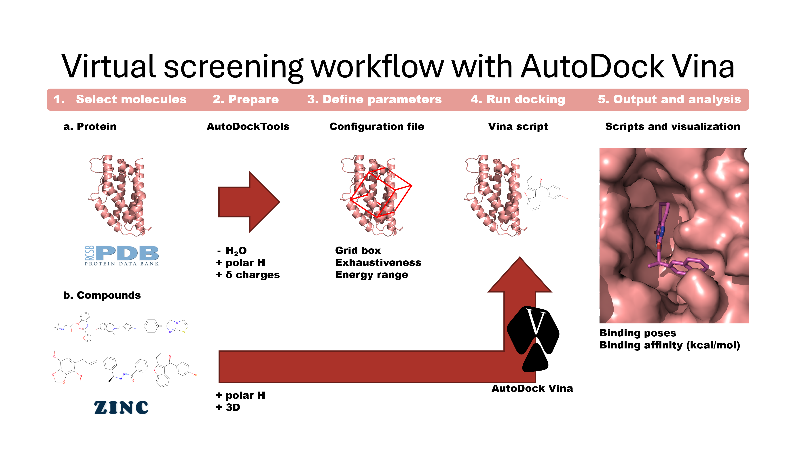
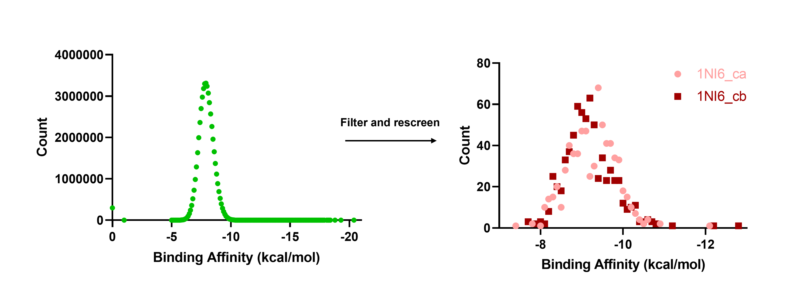
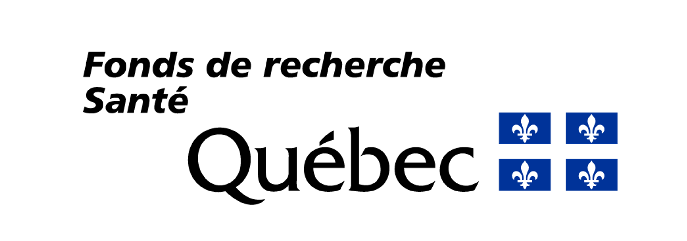

MSc Biochemistry · McGill University
Virtual screening for selective cancer therapeutics
Combining computational discovery with experimental validation to identify compounds that may selectively target cancer cells.
Research overview
From protein target to experimental candidates
My Master's research focused on selectively targeting cancer cells while minimizing damage to healthy cells through the inhibition of key proteins. The project combined both in vitro protein validation experiments and computational virtual screening to identify potential therapeutic candidates.

Using an established pipeline combined with a custom-developed workflow, I screened over 50 million ligands from three major databases to identify molecules capable of binding to my selective protein target.

The top candidates were shortlisted through detailed analysis and further refined based on their predicted binding affinities and drug-like properties, resulting in a selection of compounds for experimental validation across 10 cancer cell models.
Funded by
